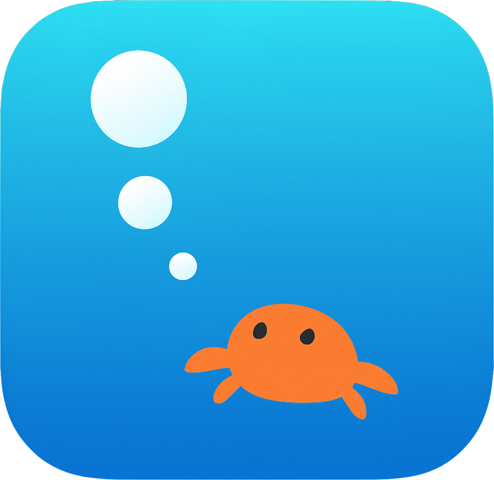

出力
値や計算結果を出力欄へ表示します。
print(2 + 3)
ClambonCLAMBON DOCUMENTS
ClambonはScratchのブロックと1対1対応するコードを記述できるプログラミング言語です。このページでは、Playgroundの使い方と最初に覚える文法を説明します。
print("Hello, Clambon!")ONE BLOCK, ONE CODE
1つのScratchブロックに対して、同じ役割を持つClambonの書き方があります。学習パレットの「ブロック対応表」では、対応元の画像とコードを並べて確認できます。
print("Hello!")random(1 to 10)wait(1)正確な対応一覧はPlayground内の「学習」→「ブロック対応表」を参照してください。
値や計算結果を出力欄へ表示します。
print(2 + 3)処理をまとめ、名前を付けて再利用します。
define plus(a, b) {
return a + b
}プログラムの先頭で使う拡張機能を読み込みます。
import Clage学習パレットとブロック対応表を開いた状態で始められます。
学習モードではじめる →